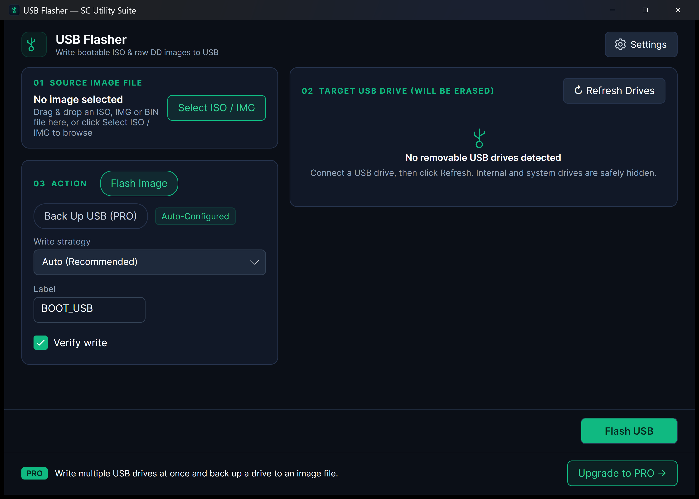

Safe USB Image Writer
Write Bootable ISO & Raw Disk Images to USB.
With Strict Drive Protection.
Flashing an operating system installer (Linux, Windows, Raspberry Pi) to a USB thumb drive is risky if a tool accidentally selects your primary boot SSD. USB Flasher incorporates strict drive-type filtering, volume locking, and safety prompts so you only ever write to removable USB media.
winget install --id 9P9NBFS7PMJB --source msstore
Runs on Windows 10 & 11 (x64), Linux (Snap Store, .deb, .tar.gz), and Android. No sign-up, no subscriptions, zero cloud telemetry.

Your files never leave your PC. No cloud uploads, no third-party tracking.
No startup daemons, no background services, no persistent system tray bloat.
Useful free edition with no expiry. Upgrade once for lifetime extras; no subscriptions.
Designed for Performance
Key Features & Capabilities
Built with native Windows 11 Fluent styling, high-efficiency local engines, and zero friction.
Strict Drive Isolation
Automatically detects and hides internal NVMe, SATA, and system boot drives, preventing catastrophic accidental formatting.
ISO & Raw IMG Support
Flash standard bootable Linux ISOs, Windows installation media, and raw DD disk images (.img, .bin, .raw).
Drive Backup Mode (PRO)
Clone physical USB drives, Raspberry Pi microSD cards, or flash media into raw backup .IMG files.
Direct Hardware Verification
Calculates post-write sector checksums to verify your flashed drive will boot reliably without data corruption.
Guided 3-Step Workflow
From Disk Image to Verified Bootable USB
Hardware locks hide internal system disks while post-write verification confirms every sector.

Quick Start Guide
How to Use USB Flasher
Three straightforward steps from file selection to completed task.
Select Disk Image
Choose your ISO or raw IMG file (Ubuntu, Fedora, Windows, Raspberry Pi OS, etc.).
Select Removable USB Drive
Pick your target removable USB drive. Internal drives are automatically protected and filtered out.
Flash Safely
Confirm the drive selection and start the write. A real-time progress bar shows write speeds and byte verification.
SEE IT IN ACTION
Watch USB Flasher in Action
Instant high-framerate demos, vertical 60-second Short, and full YouTube walkthrough.
Transparent & Fair Pricing
Free vs. Lifetime PRO
Available free on Microsoft Store, Snap Store, direct installer/portable ZIP, and Linux .deb/.tar.gz. Upgrade anytime with a one-time PRO licence.
FREE FOREVER
Standard Edition
$0 no expiration
Full ISO and raw IMG disk writing to USB drives, drive safety filters, and post-write verification.
- 100% offline file processing
- No recurring subscription
- Clean Windows 11 Fluent interface
- No watermarks or cloud lock-in
OPTIONAL LIFETIME UPGRADE
PRO Edition
$3.99 one-time payment
Full physical drive backup mode to clone USB disks into raw .IMG files, plus upgrade banner removal.
- Clone USB drives to .IMG files
- Backup Raspberry Pi SD cards
- Remove upgrade banner
- Lifetime license
Answers
Frequently Asked Questions
Can USB Flasher accidentally overwrite my C: drive?
No. USB Flasher queries Windows storage management APIs and strictly filters out non-removable physical drives (such as your internal boot SSD). Only confirmed removable USB storage devices are presented in the drive selector.
What operating system images are supported?
You can flash standard bootable Linux distributions (Ubuntu, Debian, Fedora, Arch), Windows installation ISOs, and raw disk images for single-board computers like Raspberry Pi.
How does Drive Backup mode work?
In PRO mode, you can select any connected USB drive or microSD card and clone its raw partition structure and data into a single .IMG file on your computer for safekeeping.
Part of the SC Utility Suite
Looking for other native Windows desktop tools? Explore the other 6 privacy-first utilities in our family:
COMPLETE TOOLBOX